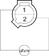
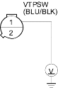

DTC P1259: VTEC System Malfunction
Special Tools Required
- Oil pressure gauge attachment 07NAJ-P070100
- Low pressure gauge 07406-0070001
- Hose oil pressure 07ZAJ-S5A0200
- Reset the ECM/PCM (see page 11-312).
- Check the engine oil level, and refill if necessary.
- Start the engine. Hold the engine at 3.000 rpm (min-1) with no load (in Park or neutral) until the radiator fan comes on.
- Road test the vehicle:
Accelerate in 1st gear to an engine speed over 4,000 rpm (min-1). Hold that engine speed for at least 2 seconds. If DTC P1259 is not repeated during the first road test, repeat this test 2 more times.
Is DTC P1259 indicated?
YES |
- Go to step 5. |
NO |
- Intermittent failure, system is OK at this time. Check for poor connections or loose wires at the VTEC solenoid valve and at the ECM/PCM. |

- Turn the ignition switch OFF.
- Remove the resonator (see page 11-448).
- Disconnect the VTEC oil pressure switch 2P connector.
- Check for continuity on the VTEC oil pressure switch between the VTEC oil pressure switch 2P connector terminals No. 1 and No. 2.

Is there continuity?
YES |
- Go to step 9. |
NO |
- Replace the VTEC oil pressure switch. |
- Turn the ignition switch ON (II).
- Measure voltage between the VTEC oil pressure switch 2P connector terminal No. 1 and body ground.

Is there battery voltage?
YES |
- Go to step 15. |
NO |
- Go to step 11. |